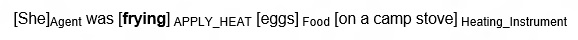
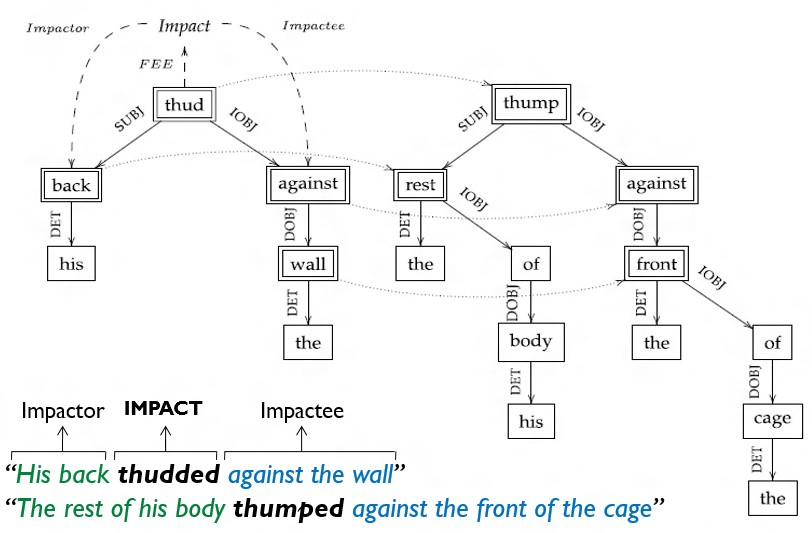
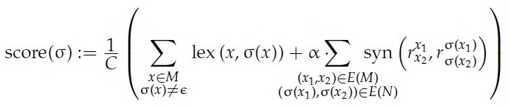
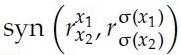
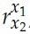

This project is an implementation of a semantic role labeler, as presented in the article by Furstenau and Lapata, “Semi-Supervised Semantic Role Labeling via Structural Alignment” (2012).
The goal is to expand the collection of annotated sentences in order to create a training dataset for NLP applications, such as text translation, information extraction, sentiment analysis and so on.
Instead of adding annotated instances manually, we use semi-supervised learning to create novel instances of annotated sentences. The annotation of an unlabeled sentence is based on its similarity to the labeled seed sentences. We assume that sentences that are similar in their lexical material and syntactic structure are likely to share semantic analysis.
The part of the lexical similarity check is external to the main algorithm, what makes it work for various languages.
Frame Semantics is a theory in linguistics, developed by Charles J. Fillmore, which relates linguistic semantics to knowledge and experience. The main idea is that in order to understand the meaning of a word, one needs to have all the essential knowledge that relates to it. That is, the meanings of words depend on contexted experiences.
A word represents a category of experience, and thus evokes a frame of semantic knowledge relating to the concept that word refers to. The frame identifies the experience and gives structure and meaning to the objects, the relationships and the events within the experience.
For example, the sentence “Mary bought a book from John” is associated with the commercial transaction frame, in which the buyer gives money and takes the goods, and the seller gives the goods and takes the money. The word “bought” evokes the frame, and “Mary”, “book” and “John” have the semantic roles: Buyer, Goods and Seller, correspondingly. The semantic roles are dependent from syntactic roles. The whole commercial event scenario is available, or “activated”, in the mind of anybody who comes across the words “buy”, “sell”, “pay”, “cost”, “spend”, etc.
Sometimes a word can be associated with more than one frame. For example, the word “breakfast” can be associated with the frame for structured pattern of meals (eating in a specific part of the day), which helps us understand a sentence like, “I always eat cereal for breakfast.” It can also be associated with the frame for a particular combination of foods typically eaten as breakfast, which helps us understand the sentence, “Breakfast served at any time.”
Recognizing a large number of such frames, and knowing what linguistic choices are relevant for each of them, is a big part of knowing a language.
The FrameNet project is building a lexical database of English that is both human- and machine-readable, based on the Frame Semantics theory. The project contains more than 170,000 manually annotated sentences, providing a unique training dataset for semantic role labeling, and more than 1,000 semantic frames. The frames are linked them together by a system of frame relations, which relate more general frames to more specific ones and provide a basis about events and for reasoning intentional actions.
Each frame has lexical units (LU’s) – those are the words which evoke that frame (also called Frame Evoking Elements – FEE’s), and frame elements (FE’s) – those are the semantic roles of that frame.
Here is an example of a FrameNet annotated sentence in the APPLY_HEAT frame:

The semantic role labeler (SRL) needs to identify the predicate (FEE) and indicate what semantic relations hold among it and its arguments (FEs). These relations are drawn from a pre-specified list of possible semantic roles for that frame. In order to accomplish this, the role-bearing constituents in a clause must be identified and their correct semantic role labels assigned.
The goal is to enlarge the set of annotated sentences by using semi-supervised learning. That is, using a small set of manually labeled training instances and a large set of unlabeled instances.
The main idea is to find novel instances based on their similarity to manually labeled seed sentences, assuming that sentences that are similar in their lexical material and syntactic structure are likely to share frame semantic analysis. Therefore we can infer a sentence’s annotation from a similar annotated seed sentence.
Finding similar sentences is formalized as a graph alignment problem. Each sentence is represented as a dependency graph, where the nodes are the words in the sentence and the directed edges are the grammatical relations between the words. After finding an alignment between two dependency graphs, we calculate the alignment’s score using a function based on lexical and syntactic similarity. The graph alignment with the best score is used to project the annotation from the labeled sentence onto the unlabeled sentence.
Our input is a set L of sentences labeled with FrameNet frames and roles (the seed corpus), and a set U of unlabeled sentences (the expansion corpus). The output is a set X⊂U of newly annotated sentences.
The main algorithm consists of two parts:
The process of finding an alignment between two sentences is as follows:
For each sentence, represented by a dependency graph, we want to focus on the relevant subgraph. This subgraph is called a predicate-argument structure.
For the labeled sentence, the relevant predicate-argument structure (the alignment domain) contains: the FEE, all direct dependents of the FEE (excluding auxiliaries), all the nodes on complex (undirected) paths from the FEE to the role-bearing nodes, and for all those nodes – if they are a conjunction node, or represent a preposition – single direct dependents of them.
For the unlabeled sentence, the predicate-argument structure (the alignment range) is a subgraph corresponding to the alignment domain. It contains the target predicate, and as we don’t have any frame semantic information, we reuse the set of complex paths from the labeled sentence in order to choose which parts of the unlabeled sentence are likely to be relevant.
Now we want to find an alignment (a partial injective function) from the predicate-argument structure of the labeled sentence, M, to the predicate-argument structure of the unlabeled sentence, N. That is, find a function σ:M→N∪{ε}.
For example:

The score of the alignment is the sum of the lexical similarity between the nodes and the syntactic
similarity between the edges:

The function lex(x,σ(x)) gives the lexical similarity between the words x and σ(x). This is an external function and is language-specific. It returns a value between 0 and 1.
The function  gives the syntactic similarity between the edges (x1,x2) and (σ(x1),σ(x2)). The notation  denotes the grammatical relations between x1 and x2. This function returns a binary value: 1 if the edges have the same label, and 0 otherwise.
The overall syntactic similarity is multiplied by α, which is the relative weight of the syntactic similarity compared to the lexical similarity of the sentences (optimal value of α ≈ 0.55)
C is the normalizing factor, which is relative to the size of M and N.
After finding an optimal alignment between two sentences, we add the alignment and it’s score to the set of sentences newly annotated according to the labeled sentence. Thus for every labeled seed sentence there is the set of newly annotated sentences and the score of the alignment they were annotated by.